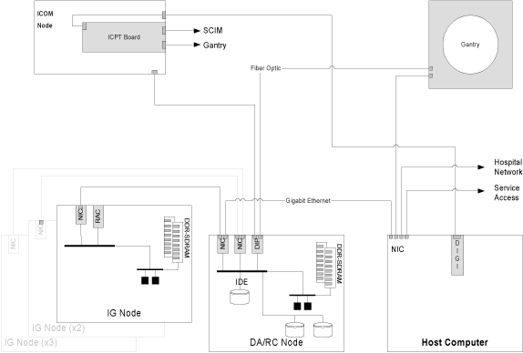
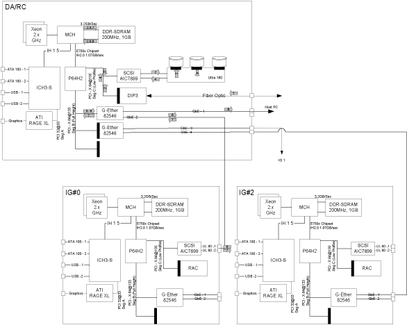
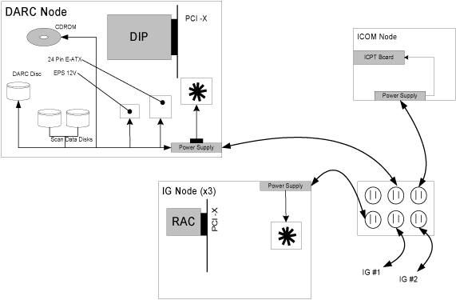
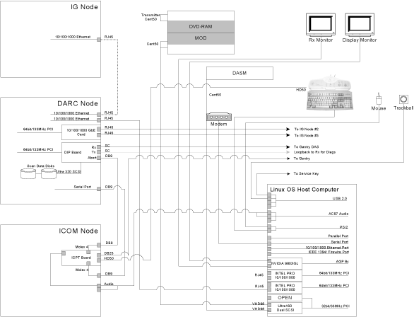

Operating Documentation
Direction 5181166-800, Rev# 7
BrightSpeed Select Service Methods Adv
Operating Documentation |
| Last Revised on: | March 19, 2008 |
This module contains the following subsections:
Section 1 - Data Acquisition / Recon Control 2 (DA/RC2)
Section 2 - Image Generation (IG) Computer
Section 3 - SCSI Tower
Section 4 - Global Operator Console 4th Version. Includes:
Section 4.1 - Overview (GOC4)
Section 4.2 - DARC2
Section 4.3 - Image Generator (IG)
Section 4.4 - IG Computer
Section 4.5 - Reconstruction Acceleration Card (RAC)
Section 4.6 - Power
Section 4.7 - Intercom Component
Section 4.8 - Cooling Package
Section 4.9 - Service and Diagnostics
Section 4.10 - Console Block Diagrams
The DARC2 outlined in this specification consists only of what is commonly referred to as a rack-mount computer. The supplied DARC2 will include a supplier hardware diagnostic CD, but will not include external peripherals such as keyboard, mouse, display monitor(s), or external cables. These external and peripheral functions will be provided by GE Healthcare unless agreed to and reflected in the respective part numbers. Agreements and system part numbers may also include the integration of GE Healthcare specified components into the DARC2, which will be outlined in this document and reflected in the respective part numbers. As an FDA governed and ISO compliant medical products OEM, controlled and documented configurations are of critical importance to GE Healthcare.
The requirements below are purposely specific to prevent supplier changes without advance notice and possible pre-qualification by GE Healthcare.
The DARC2 motherboard shall be an Intel® WestvilleTM, or equivalent, and shall meet the following requirements:
Support Dual Intel® XeonTM Socket604 processors (2.8GHz minimum)
Onboard regulation of processor voltages
Intel® E750x chipset
533Mhz Front Side Bus (FSB)
Minimum of two (2) 10/100/1000 Mb onboard Ethernet ports
2.0GB DDR-266 SDRAM® memory using minimum two (2) 184-pin DIMM sockets
Support Serial Over LAN (SOLAN)
One (1) ATA100 interface
One (1) UART, DB9 interface
One (1) Serial, DB9 (male) interface
One (1) Ultra320 SCSI controller capable of supporting externally connected peripherals
Minimum of four (4) PCI-X expansion slots (100Mhz min.)
BIOS configuration is specified in Appendix A - BIOS Configuration
The DARC2 shall include at least four (4) PCI-X expansion slots.
Two (2) slots shall be able to accommodate full-height “short” cards
One slot shall accommodate one of the following DAS Interface Processor (DIP) cards
| DARC2 Part No. | DIP Part No. | System |
| 5114772 | 2363229 | GRE 16 Slice MDAS |
| 5114772-2 | 2375741 | GRE 4/8 Slice MDAS |
| 5114772-3 | 2378286 | GRE 4 Slice SDAS |
One slot shall accommodate a DB9 male serial port
Any remaining slots shall be able to accommodate low-profile or “half height” cards
The DARC2 does NOT require an internal 3.5”, half-height, 1.44MB floppy diskette drive.
The DARC2 shall include one (1) internal hard disk drive as follows:
5.25” half height form factor
IDE ATA-100 interface
Minimum unformatted capacity of 40GB
Minimum rotational rate of 7,200 RPM
The DARC2 shall include two (2) internal hard disk drives as follows:
| NOTE: | These disk drives replace the SDDA (Scan Data Disk Array) of the GOC3 Console. The SDDA is now combined with the DARC2. |
5.25” half height form factor
SCSI3 interface
Minimum unformatted capacity of 36GB
Minimum rotational rate of 15Krpm
Qualified Drives
Seagate ST336753LW/LC Firmware 006
The DARC2 shall include one (1) internal DVD-ROM drive as follows:
5.25” “slim” form factor
IDE (ATAPI) interface
Minimum Rotational speed: 24X
Minimum of 512K internal data buffer
Read compatible with CD-R, CD-ROM, CM-ROM-XA, CD-I, CD Audio (CD-DA), PhotoCD Multi-session, CD-Extra, CD-Text, and DVD-ROM.
Due to requirements of the GE Healthcare Operating System auto-loader this drive cannot be the master drive on the IDE BUS.
The DARC2 shall have four (4) external Ethernet port connections as follows:
Ports may be motherboard-resident (e.g. two ports onboard the Intel® WestvilleTM)
Ports may be added by using a low-profile, PCI-X expansion card as follows:
Intel® PWLA8492MT (PBA# A92111-004, C29887-002 or C41421-003)
IEEE 802.3 compatible 10/100/1000 MB/sec auto-sensing Ethernet
Standard 8-pin RJ45 locking female connector mounted at rear of the chassis
The Ethernet connector shall have the following pin assignments:
| Pin 1: | TX + | Pin 5: | DC - |
| Pin 2: | TX - | Pin 6: | RX - |
| Pin 3: | RX + | Pin 7: | DD + |
| Pin 4: | DC+ | Pin 8: | DD |
The DARC2 shall have one (1) external Ultra320 SCSI port consisting of a VHDCI68 female connector with captive #2-56 female screw jacks for cable attachment.
This port shall reside on the motherboard, protruding through the rear of the chassis, and shall be pulled from the SCSI BUS referenced in 3.2.11 above.
The DARC2 shall have two (2) serial ports, assigned as follows:
ttyS0 - pulled to a DB9 (male) interface at the rear of the chassis
ttyS1 - redirected for serial-over-LAN requirements
The DARC2 shall include external switches and indicators on the chassis as follows:
A pushbutton system POWER ON/OFF switch, which toggles system power ON or OFF when pressed or held.
A pushbutton system RESET switch, accessible on the front of the chassis, that re-initializes all internal hardware without cycling power to the DARC2 (hard reset/soft boot).
LED indicators shall be accessible and visible on the front of the chassis as follows:
System power is ON - steady GREEN - labeled “I/O” or “Power”
System error - flashing or steady RED - labeled “FLT”
LAN Activity - flashing Yellow - labeled “LAN”
Hard Disk Activity - flashing GREEN - labeled “HDD”
| Temperature | 5° - 35° C (41° - 95° F) |
| Temperature Change | 3° C per Hour (37.5° F per Hour) |
| Relative Humidity | 10% - 90% (non-condensing) |
| Relative Humidity Change | 5% RH per hour |
| Noise | Less than 45 dBa |
| Altitude | 10,000 feet above sea level |
| Shock Max | 20G @ less than 3ms (1/2 sine) |
| Vibration Max | random 0.21G RMS |
| Temperature | 0° to 50° C (32° to 122° F) |
| Temperature | 0° to 50° C (32° to 122° F) |
| Temperature Change | 5° C per Hour (41° F per Hour) |
| Relative Humidity | 5% - 95% (non-condensing) |
| Relative Humidity Change | 5% RH per hour |
| Altitude | 40,000 feet above sea level |
| Shock | 80G @ less than 3ms (1/2 sine) |
| Vibration | 2.09G RMS (random) |
| Max swept sine 0.5G RMS (0-peak) |
The Image Generator (IG) outlined in this specification consists only of what is commonly referred to as the computer. The supplied IG will not include external peripherals such as keyboard, mouse, display monitor(s), or external cables. These external and peripheral functions will be provided by GE Healthcare unless agreed to and reflected in the respective part numbers. Agreements and system part numbers may also include the integration of GE Healthcare specified components into the IG which will be outlined in this document and reflected in the respective part numbers. As an FDA governed and ISO compliant medical products OEM, controlled and documented configurations are of critical importance to GE Healthcare. The requirements below are purposely specific to prevent supplier changes without advance notice and possible pre-qualification by GE Healthcare.
The IG motherboard shall be an Intel® WestvilleTM, or equivalent, and shall meet the following requirements:
Support Dual Intel® XeonTM Socket604 processors (2.8GHz minimum)
Onboard regulation of processor voltages
Intel® E750x chipset
533Mhz Front Side Bus (FSB)
Minimum of one (1) 10/100/1000 Mb onboard ethernet port
2.0GB DDR-266 SDRAM® memory using minimum two (2) 184-pin DIMM sockets
Support Serial Over LAN (SOLAN)
One (1) PCI-X expansion slot (100Mhz min.) accommodating a riser card
BIOS configuration shall be in accordance with details outlined in Appendix A of direction 2362872PSP
The IG shall include at least one (1) PCI-X expansion slot capable of accommodating a full-height “short” card.
This expansion slot shall contain a Recon Accelerator Card (GE Healthcare part no. 2316826).
The IG shall contain one (1) internal 3.5”, half-height, 1.44MB floppy diskette drive.
The IG does not require Ethernet ports in addition to the board-resident port.
Chassis type: Rack-mountable
Mounting orientation: Horizontal
Maximum chassis height: 1U (44.5mm/1.75”)
Maximum chassis width: 19” Rack standard
Maximum chassis depth: 508mm (20”)
Maximum weight: 10 Kg (22 lbs)
Internal signal and power harness drops must be sufficient to support maximum configuration above
Handles shall be mounted at each side of the front of the chassis for ease of removal from a rack. Handles shall protrude no more than 20mm (3/4”) from the chassis front panel.
The IG shall include external switches and indicators on the chassis as follows:
A system pushbutton POWER ON/OFF switch which toggles system power ON or OFF when pressed or held.
A pushbutton system RESET switch accessible on the front of the chassis that re-initializes all internal hardware without cycling power to the IG (hard reset/soft boot).
LED indicators shall be accessible and visible on the front of the chassis as follows:
System power is ON - steady GREEN - labeled “I/O”
System error - flashing or steady RED - labeled “FLT”
LAN Activity - flashing GREEN - labeled “LAN”
The IG shall operate within the following limits of environmental conditions:
| Temperature | 0° - 35° C (32° - 95° F) |
| Temperature Change | 3° C per Hour (37.5° F per Hour) |
| Relative Humidity | 20% - 80% (non-condensing) |
| Relative Humidity Change | 5% RH per hour |
| Noise | Less than 45 dB |
| Altitude | 10,000 feet above sea level |
| Vibration | 20G @ less than 3ms (1/2 sine) |
| Vibration Max | Random 0.21G RMS |
The IG shall sustain no permanent damage while in the following non-operating environment:
| Temperature | -34° to 50° C (-29° to 122° F) |
| Temperature Change | 5° C per Hour (41° F per Hour) |
| Relative Humidity | 10% - 95% (non-condensing) |
| Relative Humidity Change | 5% RH per hour |
| Altitude | 40,000 feet above sea level |
| Shock | 80G @ less than 3ms (1/2 sine) |
| Vibration | 2.09G RMS (random) |
| Vibration Max | Random 0.5G RMS |
2362872 IG as defined herein including:
Dual Intel® XeonTM 2.8Ghz processors, 512KB L2 Cache, 2.0GB DDR200 SDRAM memory, etc.
2316826 Recon Accelerator Card (RAC).
Two Bay External SCSI tower that is used on the Global Recon Engine Console. The tower will contain a MOD read/write device and a DVD-RAM drive.
Illustration 1: SCSI Tower (Exploded View)

| NOTE: | Click on the PDF icon below, to view the full version of the illustration. |
Media File 1: SCSI Tower (Exploded View)

The Global Operator Console 4th version (GOC4) consists of the following four (4) components.
The Data Acquisition and Recon Control2 (DARC2) Component - incorporates the Scan Data Disk Array (SDDA) component from the previous console GRE/GOC3.
The Image Generator (IG) Component - Is the same as the previous console version GRE/GOC3.
Intercom Component - Is now a standalone component removed from the GRE/GOC4 SDDA and redesigned for better reliability and volume control.
Cooling Package, including:
Fans
Front and Rear Covers with Foam Insulation
Air Filter
The DARC2 node receives raw data from the Data Acquisition System (DAS) through an on-board Data Interface processor (DIP) card, and stores that data in the Scan Data Disks located in the DARC2. The raw data is then delivered from the scan data disks in the DARC2 to the IG nodes. The IG nodes then create images using on-board processors and Recon Accelerator Cards (RAC). The images generated by the IG nodes are sent back to the DARC2 node, which gathers the images and sends them to the Host Computer.
Though each IG node will have a floppy boot disk, the DARC2 node should be capable of booting all IG nodes in the GOC4 via Gigabit Ethernet, using Serial Over LAN (SOLAN) functionality.
The host computer for the GOC4 console will be an off-the-shelf, Linux-based system, which meets EMC requirements per CISPR 11.
The DARC2 node provides to the IG nodes not only boot code but all application code and parameters as well.
Key goals of the GOC4 are:
Scalability - performance and cost are scalable
Flexibility - new functions and features such as cone-beam back projection should be easy to implement
Performance - the high-end configuration should support 12 frames per second 2D back projection
Ability to Upgrade - it should be relatively easy to replace installed-base consoles
Performance - general purpose processors should be used to take advantage of improving processor speeds in the industry
The overall performance scope of the GOC4 shall be as follows:
Recon times: 4fps - 12fps @ 2D BP
Latency: < 2.0 seconds
Image Matrix: < 512 x 512 pixels
2D BP: hardware and software support
3D BP: not yet supported
The DARC2 node controls most of the GOC4 functions and data flow, the exception being actual image generation. This node should receive a reconstruction request from the host computer, recognize the recon mode, timing, parameters, and data, and be able to generate the image set.
The raw data is first restored from the disks. The DARC2 node then creates an image set and requests image generation from the IG node.
While most of the software components (e.g. Recon_Control, Data_Restore, Image_Buffer, and Data_Acq) reside on this node, the components related to image generation are calculated on the IG nodes. The DARC2 node may help with some light calculation tasks such as offset vector generation.
Main data flow of the DARC2 node is described as follows:
Receive raw data from the Gantry
Store the raw data to the scan data disks
Restore the raw data from the scan data disks and transfer to IG nodes over GB Ethernet
Take multi-image streams from the IG nodes and forward them through a single image stream to the host computer
The control flow is described more fully in the GRE Design Theory of Operation.
The DARC2 node is comprised of the following:
DARC2 computer: a computer node using a high-performance PC server
DARC2 disk: the OS and Recon Applications software are stored on this disk
DIP card: the DAS Interface Processor card
Gigabit Ethernet (GbE) card: to increase IG nodes additional GbE cards may be installed
CD-ROM drive: will be used for software installation and stand-alone use
Floppy drive: a 3½” floppy drive will be used for BIOS flash, if necessary
The DARC2 node is intended to be a highly independent module, which can be replaced with PC servers consisting of the same specifications, regardless of manufacturer or manufacturer location.
The DARC2 node will take advantage of a standard, off-the-shelf motherboard, using dual microprocessors to increase processing density. The DARC2 node will use very high performance general-purpose processors, memory, and a server motherboard with GB Ethernet and SCSI port(s), and power supply.
Dual Processors: Intel ® Xeon™ or successor
Memory: Min. four slots DDR-SDRAM (Min. 2.0 GB)
Form factor: SSI rack-mountable
Onboard graphics chip and PS/2 port(s) are needed to support development and diagnostics
The chassis is a standard EIA 19" x 2U rack-mount with a max. depth of 20". The chassis have a cooling system capable of sufficiently dissipating heat created by the motherboard's dual processors.
Power Supply: ATX or SSI EEB compliant; input 100-120Vac / 200-240Vac, @ 50-60Hz, auto-detecting.
The DARC2 should boot up when AC power is provided to the components power supply without requiring a PWON signal toggle. Such a hardware switch is needed for installation power-on and recovery from unexpected BIOS power-on settings.
A power-on LED should indicate that the DARC2 power supply is providing DC output to the motherboard and should be mounted on the front of the chassis. Additional LED indicators such as on/off/blinking are more fully described in motherboard vendor specifications.
The DARC2 should be able to be reset by a single hardware switch located on the front of the chassis.
| NOTE: | When the DIP card detects a PCI reset, all registers are cleared, causing the RHARD and X-ABORT relay to open. |
The DARC2 disk consists of a single SCSI or E-IDE disk and provides OS code, application programs, tables, and parameters to the GOC4. All nodes in the GOC4 are booted from this disk, which also has the swap partition area to the DARC2 node. This disk should be on a separate bus from the scan data disks.
Rotation speed: 7,200 rpm or higher
Interface: ATA100/133 (recommended) or newer; Ultra160/320 SCSI (acceptable)
Capacity: 36GB or higher
Form Factor: 1" height, 3½” HDD
Connection: 40-pin ATA100, 80-pin SCA2, or HD68-pin
The high-speed Scan Data Disks are connected to the DARC2 node via an internal Ultra320 SCSI bus. To increase the disk read/write speeds software RAID0 (striping) is employed. The Scan Data Disk configuration may change according to the number of detector slices, DAS trigger rates, and/or IG performance.
Rotation speed: 15,000rpm or higher
Interface: Ultra320 SCSI or successor
Capacity: 36GB or more per disk
Form factor: 1" height x 3½” HDD
Connection: HD68-pin, powered by 4-pin commercial Mate-N-Lok
RAID0: striping up to four disks
This PCI DIP card supports almost the same functionality as the current DIP in that it converts the optical signal received from the Gantry into electrical raw data and writes that data to one of the double buffers on the card. When the received data count reaches a predetermined value it will switch over to the other buffer. The DARC2 then receives this data via the PCI bus.
This card supports 32bit, 33MHz, 3.3V I/O PCI bus interface with an FPGA, and should be able to support 333Mb/sec and/or 833Mb/sec data rate optical fiber interface.
Additional details can be found in the purchase spec. - 2363229PSP.
Each IG node is to be connected to the DARC2 via an off-the-shelf Gigabit Ethernet (GbE) card connected to one of the DARC2's PCI-X slots. Depending on the number of optional IG nodes additional GbE cards may be added to the DARC2.
Dual Gigabit Ethernet ports
10Base-T, 100Base-TX, 1000Base-TX IEEE802.3ab compatible
64bit, 66MHz (or higher) PCI-X interface
Low profile form factor
The DVD-ROM drive is used for software installation, system diagnostics, and to support stand-alone operation of the DARC2.
This 3½” floppy disk drive will be used for BIOS upgrades or for a boot disk, if necessary.
The Image Generator (IG) component mounts an FPGA accelerator card (RAC card) on a PCI-X slot. The IG node works under the DARC2's supervision as a very high performance image generation calculator. When an IG node receives an image generation request from the DARC2 it will perform image generation processes. (i.e. preprocess, filtered back projection and post process, etc.) When an image set is calculated, the IG node notifies the DARC2 and transfers the set of pixel image data to the DARC2 via Gigabit Ethernet. Because each IG node is connected to the DARC2 node directly, without a switching hub, the individual IG nodes do not communicate with each other nor do they share processing data.
The GOC4 may consist of several IG nodes of varying performance. For example, one node may be replaced by a later version IG node having higher frequency CPUs. The GOC4 hardware allows any combination of server performance among the IG nodes. Therefore, all IG nodes and DARC2 nodes have to respond to a hardware configuration inquiry.
The IG node consists of the following:
IG computer: computer using a high-performance PC server
RAC Card: Recon Accelerator Card plugged into a PCI-X slot in the IG computer
Floppy drive: a 3½” floppy drive will be used for BIOS flash, if necessary
The IG computer will be identical to the DARC2 computer as described in Section 4.2 (DARC2 Computer) above with the following exceptions:
Chassis size: 19" rack-mount type EIA 1U height x 20" max depth
DVD-ROM Drive: the IG computer will not have a DVD-ROM drive
This “low-profile” PCI card accelerates the two-dimensional (2D) back-projection process of the GOC4 and is plugged into a 64bit, 66MHz (533MB/sec) PCI-X slot on the IG node.
This parallel beam back-projector provides the GOC4 the ability to off-load the back-projection application from general-purpose processors to fully programmable hardware. This option dramatically increases the reconstruction performance per cost ratio.
Following are the high-level CTQs for the RAC card:
Perform 2D parallel beam back-projection at >6fps
PCI-X low-profile compatible
Communicate with IG computer through a go => complete protocol
Support PCI and Mailbox interrupts
Reconstruct any image matrix size up to 524,288 32bit pixels
In-system programmable FPGA design via software download
The major elements of the RAC card consist of:
Field Programmable Gate Array (FPGA)
QDR™ SRAM - creates two blocks of memory
FLASH Memory - contains the FPGA's configuration code
The DARC2, IG, nodes are each powered by an AC switching power supply internal to each chassis. Each node receives its AC power from a 120Vac single-phase outlet box internal to the console chassis.
A redundant power supply and/or UPS option does not need to be supported by each node. The NGPDU will provide 120Vac to the operator's console. The switching power supply internal to each node is required to allow ±5% stability.
These AC switching power supply in each node shall be SSI EPS12V, SSI EPS1U, SSI EPS2U, or ATX compliant.
SSI EPS12V: 24-pin for motherboard, 8-pin +12V for processor, 4-pin for peripherals
SSI EPS1U: 62-pin edge finger for 1U chassis server
SSI EPS2U: 24-pin for motherboard, 8-pin +12V for processor, 4-pin for peripherals
ATX: standard PC power supply, 20-pin for motherboard, 4-pin for peripherals
The table below lists the node, power supply wattage, input port (max current), and output port.
| Power Supply | Wattage | Input Port | Output Port |
| DARC2 Node | 350-400 W | 3.3A @120 Vac | 3.3V, 5.0V, +12V, -12V, 5VSB |
| IG Node | 300-350 W | 2.9A @ 120 Vac | 3.3V, 5.0V, +12V, -12V, 5VSB |
| SDDA Node | 200 W | 1.7A @ 120 Vac | 5.0V, +12V, -12V |
A minimum of five outlets should be available for the GRE, excluding the host computer. Total AC power consumed by the GRE (excluding host computer and peripheral devices) is estimated below. This estimation assumes typical wattage while the IGs are calculating images.
DARC2 + one (1) IG node ~ 700 W
DARC2 + two (2) IG nodes ~ 1000 W
DARC2 + three (3) IG nodes ~ 1300 W
The current SRU VME chassis requires a total of ~600W it is recommended that the operator console's total power requirements be calculated based upon a configuration utilizing three (3) IG nodes.
The intercom block has an audio amplifier circuit, enabling communication between the console operator and the patient on the table. This block also has sound source switching functionality.
The sound sources are:
Console microphone on the SCIM (Operator's voice)
Gantry microphone output (Patient's voice)
Auto-voice L and R (output from the host computer)
These sound sources are multiplexed by the TALK button on the SCIM and by the Auto-voice output itself. The selected output signal goes to the following devices, based on prioritized logic.
Table speaker
Console speaker on the SCIM
Auto-voice recording input on the host computer
Also refer to GOC4 Intercom Theory and Adjustments.
The cooling package consists of three (3) components:
Fan Assembly
Front and Rear Covers, with Foam, for sound reduction and air flow control
Air Filter
The Fan Assembly has perpendicular mounted larger fans than the GOC3 consoles. The Individual Fans are FRUs.
The Front and Rear covers are redesigned to accommodate the larger rear Fans, and are equipped with Insulating Foam, to both deaden noise and direct air flow for proper cooling.
The Air Filter is designed to capture room contaminates. It needs to be periodically cleaned (during a regular PM cycle).
The following diagrams illustrate the Cooling Package Components.
Illustration 2: GOC4 Cooling Fans

Illustration 3: GOC4 Rear Cover, with Foam

The GOC41.0 supports two types of diagnostic, power-on test and offline test. The power-on test is a subset of offline test. This test sweeps devices condition and checks the motherboard and some devices BIST results at system power-on after OS booted. The offline test checks each device condition, interface, and environment more strictly. The GOC41.0 should recover most of diagnostic condition without whole sub-system reset except motherboard diagnostic.
The GOC41.0 supports some kind of diagnostic tools.
Motherboard diagnostics, including memory test
DIP diagnostic
RAC BIST and/or diagnostic
Scan Data Disk diagnostic (On the DARC2)
Network / connectivity test
Assemblies are assigned as FRUs based on the likelihood of need for replacement and fixed-right- first-time (FRFT). The following is a breakdown of GOC4 FRUs:
DA/RC2 node
DIP Board
IG node
RAC Card
ICPT Board
Host Computer
A diagnostic tool must identify the error unit as FRU level.
The diagnostic tool supports system inquiry capability. These are some examples of inquiry items, CPU frequency, Memory capacity, Disk configuration, number of IG, etc.
Illustration 4: GRE High Level Hardware Level Data Flow

Gantry -> DIP: Serial data receive from a fiber optic interface
DIP -> Disk: Scan Data Store
Disk -> Recon Control: Offset Data
Disk -> Data Restore: View Data
Recon Control -> IGs: Calibration Data, offset vector, tables, parameters
Data Restore -> IGs: View Data transfer from the DARC2 to each IG over gigabit Ethernet
IGs -> Image Buffer Create: Pixel image data and small header are transferred from the IG to the DA/RC2 over gigabit Ethernet
Image Create -> Image DB: DICOM image data and are transferred from the DA/RC2 to Host PC over gigabit Ethernet
Illustration 5: GRE Detail Hardware Level Data Flow

| NOTE: | Click on the PDF icon below, for a PDF version of the above illustration. |
Media File 2: GRE Detail Hardware Level Data Flow

Illustration 6: Power Distribution

Illustration 7: GRE Interconnect Diagram

| NOTE: | Click on the PDF icon below, for a PDF version of the above illustration. |
Media File 3: GRE Interconnect Diagram